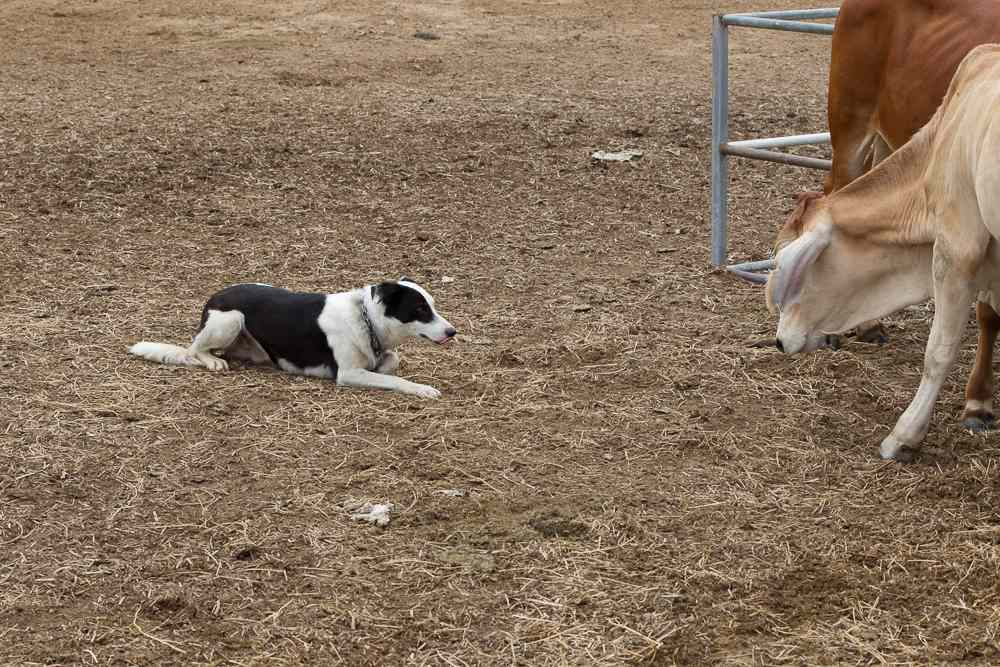

-
Think about your dates, times and what you need.
Are you teaching a class, exploring the environment, or working on a research project? When do you want to visit? Are your dates flexible?
-
Get in touch
Our station manager will work with you to establish dates and times and what you need to make your visit a success. We'll let you know what you need to do and promise to make it as easy as possible.
-
Complete your safety induction
Your health and safety is our priority. Ensure that you print and complete the safety induction before visiting Fletcherview Research Station and bring it with you on the day.
If you're unsure about anything, please let us know.
-
Make sure you're prepared
As Fletcherview is 30 minutes from Charters Towers, ensure you're prepared with sufficient food, water, fuel and supplies for your trip. Most activities will require safety gear.
Tracks on the property require a 4WD vehicle and whilst mobile coverage is available, a UHF radio is desirable. Take care around cattle and be aware of native wildlife such as spiders and snakes.
-
Enjoy your trip!
It's a scenic road out to Fletcherview but take care as wildlife are in abundance, especially around dawn and dusk.
On arrival, visit the main farm house, sign the attendance book and let the Station Manager know that you have arrived.
